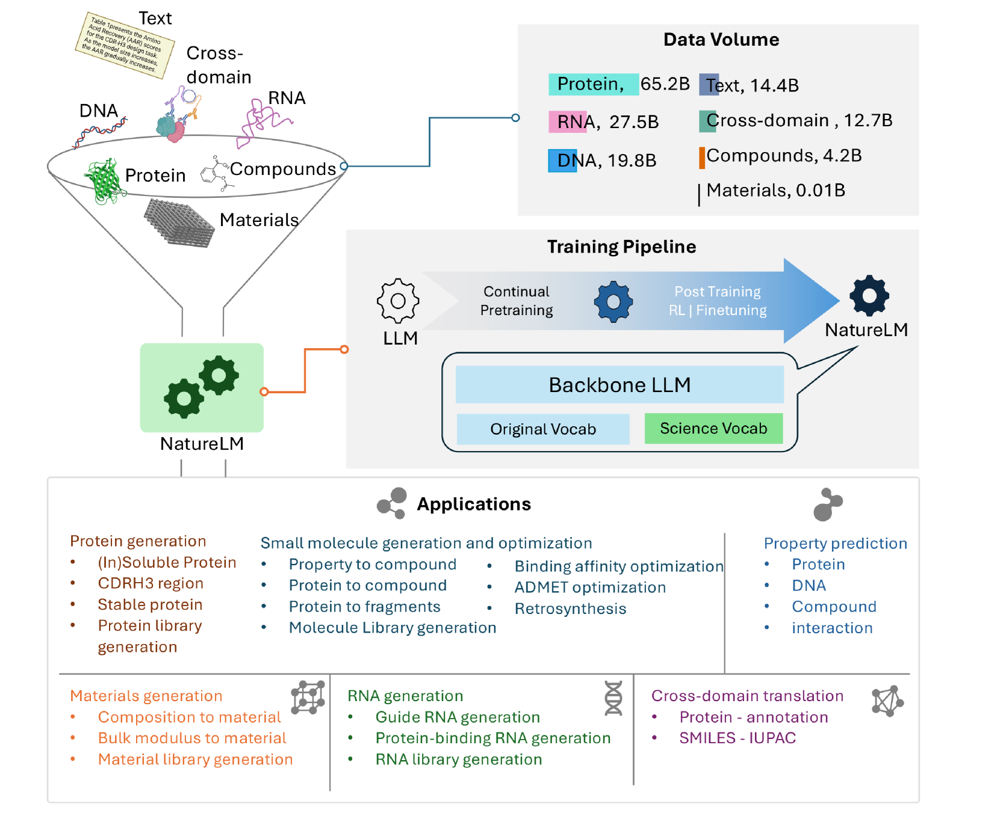
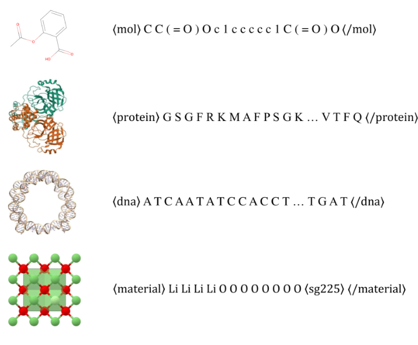
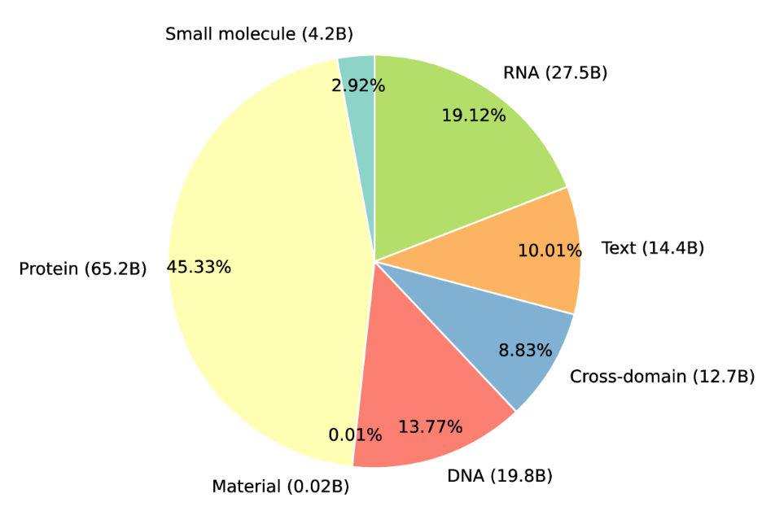
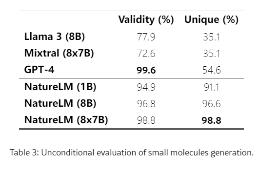
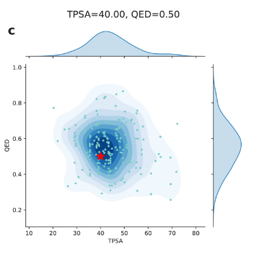
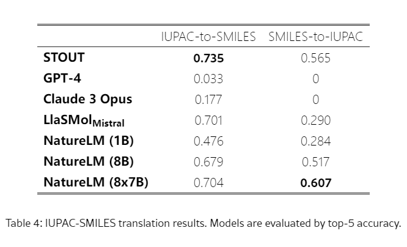
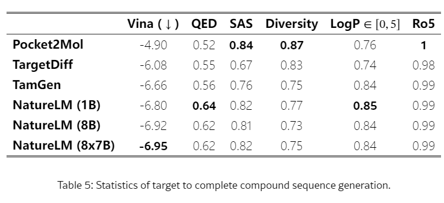
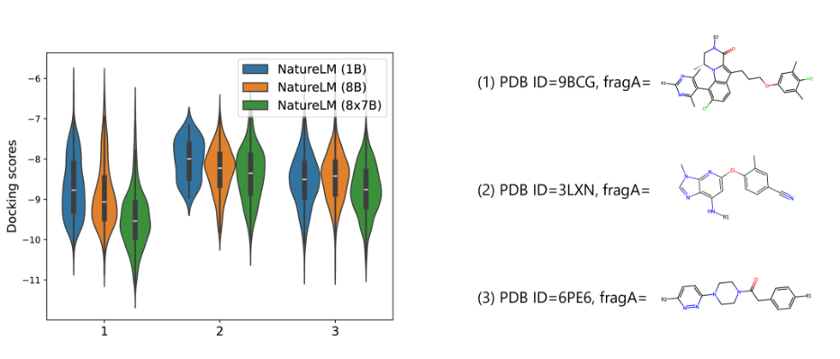
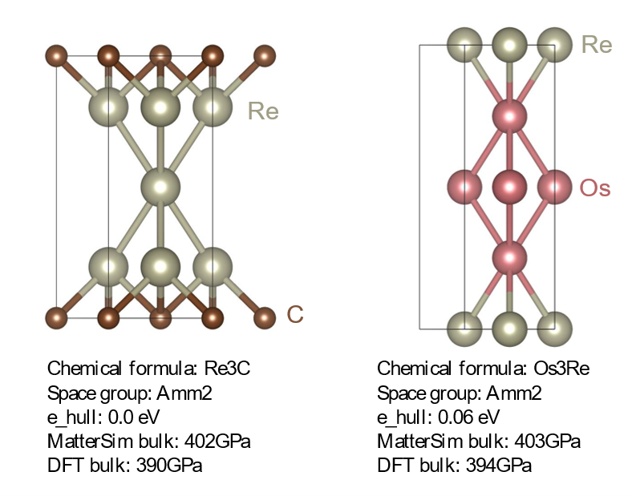

摘要： Foundation 模型彻底改变了自然语言处理和人工智能，显著增强了机器理解和生成人类语言的方式。受到这些基础模型成功的启发，研究人员为各个科学领域开发了基础模型，包括小分子、材料、蛋白质、DNA、RNA 甚至细胞。然而，这些模型通常是孤立训练的，缺乏跨不同科学领域整合的能力。认识到这些领域中的实体都可以表示为序列，它们共同构成了“自然语言”，因此我们引入了自然语言模型 （NatureLM），这是一种基于序列的科学基础模型，专为科学发现而设计。NatureLM 使用来自多个科学领域的数据进行预训练，提供了一个统一的多功能模型，支持各种应用，包括：（i） 使用文本指令生成和优化小分子、蛋白质、RNA 和材料;（ii） 跨结构域生成/设计，例如蛋白质到分子和蛋白质到 RNA 的生成;以及 （iii） 在不同领域的顶级表现，达到或超越最先进的专业模型。
NatureLM 为各种科学任务提供了一种有前途的通用方法，包括药物发现（苗头化合物生成/优化、ADMET 优化、合成）、新型材料设计以及治疗性蛋白质或核苷酸的开发。我们开发了不同大小（10 亿、80 亿和 467 亿个参数）的 NatureLM 模型，并观察到随着模型大小的增加，性能有了明显的提高。

今天我们要聊一个可能颠覆科研方式的“大杀器”——来自微软研究院科学智能中心的Nature Language Model (NatureLM)！🔬
自然科学，这个囊括了物理、化学、生物、材料科学等众多领域的庞大知识体系，一直是人类探索世界的基石。但长久以来，各个学科都发展出了自己独特的“语言”（数据表达、研究方法、理论体系）。这就像一个个独立的“知识孤岛”，虽然内部沟通顺畅，却给跨学科的交流与合作带来了不小的障碍。
正如NatureLM团队在论文中指出的：
“从基因功能的深入探究到新材料的创新设计，前沿的创新成果往往依赖于不同学科知识与技术的有机整合。由于业界目前缺乏一个能够有效连接各学科的统一框架，科研人员的视野常常局限于自身的专业领域...从而在一定程度上制约了科学整体发展的进程。”
为了打破这些壁垒，NatureLM应运而生！它不只是一个模型，更是一个连接不同科学领域的桥梁，一个能理解“自然语言”（如分子序列、蛋白质序列）和“人类语言”（我们的指令）的超级助手。
NatureLM是什么？它如何“炼丹”？
简单来说，NatureLM是一个基于Transformer解码器架构的序列基础模型。它的目标是“解读自然界的语言 (Deciphering the Language of Nature)”，从而推动科学发现。
- 海量跨学科预训练数据：
NatureLM的“食谱”非常丰富，包含了1430亿个Token，涵盖：
- 小分子：转化为SMILES序列 (如：
⟨mol⟩c1ccccc1⟨/mol⟩代表苯) - 蛋白质、DNA、RNA：FASTA序列 (如：
⟨protein⟩LALSLTAD...⟨/protein⟩) - 晶体材料：化学组分和空间群展平为序列 (如：
Li4O8⟨sg225⟩) - 文本数据：科学文献、指令等。
- 特色跨领域数据：
- 穿插序列：科学文献中的分子/蛋白名称被替换为其序列，与文本交织。
- 并行文本与科学实体：数据库中的科学事实与其文本描述配对。
- 中心法则连接：DNA序列中可翻译的部分被替换为蛋白质序列。
<grid>


</grid>
- 强大的模型架构与持续预训练：
- NatureLM基于成熟的大语言模型（如Llama 3 8B, Mixtral 8x7B）进行构建和持续预训练，并为科学实体引入了新的Token。
- 采用两阶段预训练策略，先训练新Token，再联合训练整个网络，确保稳定性和性能。
- 提供三种规模版本：1B、8B、和46.7B (8x7B专家混合模型)，满足不同需求。
- 指令微调与后训练：
- 在约510万个指令-响应对上进行监督式微调 (SFT)，覆盖60多个科学子任务，如分子优化、抗体设计、gRNA设计等。
- 后续还可探索RLHF等技术进一步优化。
NatureLM的“神操作”：三大应用场景展示
NatureLM到底有多强？
场景一：小分子“智造”——从无到有，按需定制 🧪
- 1. 无条件分子生成：AI“凭空”画分子
只需给一个 ⟨mol⟩ 起始符，NatureLM就能生成有效的、新颖的分子SMILES。

- 2. 属性到分子生成：你说要求，AI来设计
“给我一个有4个氢键供体的分子。” NatureLM就能给出：⟨mol⟩C(CC@@HO)N)CN=C(N)N⟨/mol⟩。
它还能处理多属性组合，比如同时指定QED和TPSA值，生成满足条件的分子。

给定输入“TPSA=40, QED=0.5”时，生成分子的TPSA和QED的联合分布
- 3. SMILES与IUPAC名称互译：化学界的“翻译官”
在SMILES和IUPAC名称互译任务上，NatureLM (8x7B) 表现出色，甚至媲美专业模型STOUT。

- 4. 靶点感知的小分子生成与优化：精准“打击”疾病靶点
这是药物研发的核心环节！NatureLM可以：
- 根据目标蛋白序列直接生成可能与之结合的全新化合物（Hit Generation）。
- 根据目标蛋白序列和已知分子片段，优化生成新的功能片段（Lead Optimization）。
实验表明，在对接打分（Vina Score，越低越好）、QED、合成可及性等方面，NatureLM生成的化合物优于现有基线方法。


场景二：蛋白质工程新突破——定制“生命分子” 🧬
NatureLM还能设计蛋白质！以设计能与血红素（Heme，一种重要辅因子）结合的蛋白质为例：
- 设计方式一：输入文本指令“设计一个能结合血红素的蛋白质”。
- 设计方式二：输入血红素的SMILES表达式。
两种方式都能生成潜在的血红素结合蛋白。生成的序列虽与已知蛋白相似性中等，但预测的3D结构却与真实血红素结合蛋白高度相似（RMSD仅1.068 Å），并且关键的组氨酸残基位置准确，具备潜在功能！
视频1
基于文本指令设计的血红素结合蛋白
视频2
基于包含 SMILES 表达式的小分子指令设计的血红素结合蛋白
场景三：新材料探索的“加速器”——发现“超级材料” 💎
材料科学也能被NatureLM赋能！实验要求NatureLM设计一种目标体积模量 (Bulk Modulus) 为 400 GPa（与钻石硬度相当）的材料。
- NatureLM首先输出材料组分和空间群。
- 然后，进一步微调得到NatureLM-Mat3D模型，自回归生成材料的晶格参数和原子坐标。
- DFT计算验证，生成的两种新材料体积模量分别达到390 GPa和394 GPa，非常接近目标！并且，这两种结构都是Materials Project数据库中未曾记录的全新材料！

NatureLM 设计的两款材料
NatureLM：不止于此，未来可期！ 🚀
NatureLM的出现，无疑为科研领域注入了强大的新动能。它：
- 打破学科壁垒：提供了一个统一的多学科AI框架。
- 加速创新进程：通过AI辅助，快速筛选、设计、优化。
- 降低科研门槛：让更多研究者能利用先进的计算工具。
当然，NatureLM团队也坦言，模型在语言能力和少样本学习方面仍有提升空间。但这仅仅是个开始！随着AI与自然科学的深度融合，我们有理由相信，未来的科学突破将更加迅速，创新也将更加无界。
想了解更多？
- 论文链接：https://arxiv.org/abs/2502.07527
- 项目网站及更多应用：https://NatureLM.github.io
让我们共同期待NatureLM以及更多AI for Science工具，为人类科学的星辰大海带来更多惊喜！💡